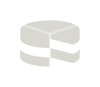
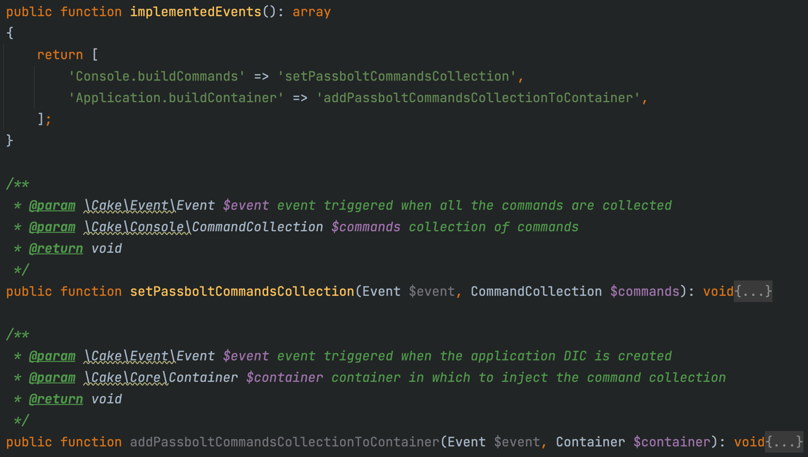

Bread and Butter
Juan Pablo Ramirez - Ishan Vyas
The CakePHP Conference - July 26th 2024

Passbolt in a nutshell
Dependency injection
Performance
Tasting tools
Passbolt in a nutshell
Solutions
Community
Business
Cloud
Dependency Injection
External libraries
league/flysystem-google-cloud-storage
enygma/yubikey
duosecurity/duo_universal_php
firebase/php-jwt
directorytree/ldaprecord
...
Dependency Injection Example
Image storage
⛅
Application.php
public function services(ContainerInterface $container): void
{
$container
->add(FilesystemAdapter::class, LocalFilesystemAdapter::class)
->addArgument(TMP . 'avatars');
}
MultiTenantPlugin.php
public function services(ContainerInterface $container): void
{
$container
->extend(FilesystemAdapter::class)
->setConcrete(MultiTenantFileStorageAdapterService::class)
->addArgument(PASSBOLT_ORG);
}
AvatarsIntegrationTestTrait.php
Dependency Injection Event
Application.buildContainer
🤸
PassboltBuildCommandsListener.php
Performance
Performance
Pagination
NumericCountAwarePaginator.php
Performance
Disable hydration
$query->disableHydration();
Performance
Avoid result formatting
$query->formatResults(function (CollectionInterface $results) {
return $results->map(function (Resources $resource) {
$resource['is_shared'] = count($resource['permissions']) > 1;
return $resource;
});
});
Calculate fields in SQL
$countSubQuery = $this->foldersRelationsTable->selectQuery();
$personal = $query->expr()->case()
->when($query->expr()->eq('COUNT(*)', 1, 'integer'))
->then($query->newExpr('TRUE'), 'boolean')
->when($query->expr()->gt('COUNT(*)', 1, 'integer'))
->then($query->expr('FALSE'), 'boolean');
$countSubQuery->select([
'is_personal' => $personal
])->where(['FoldersRelations.foreign_id' => $resourceId]);
return $query->selectAlso(['is_personal' => $countSubQuery]);unset _joinData
PassboltBelongsToMany.php
class PassboltBelongsToMany extends BelongsToMany
{
public function eagerLoader(array $options): Closure
{
$closure = parent::eagerLoader($options);
return function ($row) use ($closure) {
$row = $closure($row);
foreach ($row[$this->getAlias()] ?? [] as $i => $subRow) {
unset($row[$this->getAlias()][$i][$this->_junctionProperty]);
}
return $row;
};
}
}
Performance
Vanilla DateTime Type
TypeFactory::map('datetime', PassboltISOFormatDateTimeType::class);
🚀
Vanilla DateTime Type
ISOFormatDateTimeType.php
class PassboltISOFormatDateTimeType extends DateTimeType
{
public function manyToPHP(array $values, array $fields, DriverInterface $driver): array
{
foreach ($fields as $field) {
if (!isset($values[$field])) {
continue;
}
$values[$field] = date(\DateTimeInterface::ATOM, strtotime($values[$field]));
}
return $values;
}
}
Test Fixture Factories
Test Fixture Factories
PasswordExpiryShareControllerTest.php
$allUsers = [$owner, $userLosingPermission] = UserFactory::make(2)
->user()->persist();
[$resourceViewed, $resourceNotViewed] = ResourceFactory::make(2)
->withPermissionsFor([$owner, $userLosingPermission])
->withSecretsFor($allUsers)
->persist();
SecretAccessFactory::make()
->withUsers(UserFactory::make($userLosingPermission))
->withResources(ResourceFactory::make($resourceViewed))
->persist();
$this->logInAs($owner);
SecretAccessFactory.php
Test Fixture Factories
SelectQueryMocker.php
$countryFactory = CountryFactory::make([['Foo'], ['Bar']]);
SelectQueryMocker::mock($this, $countryFactory);
$countries = TableRegistry::getTableLocator()->get('Countries')->find();
$this->assertSame(2, $countries->count());
$this->assertSame(0, CountryFactory::count());
Test Suite Light
Test Suite Light
AppIntegrationTestCase.php
use Cake\TestSuite\TestCase;
use CakephpTestSuiteLight\Fixture\TruncateDirtyTables;
abstract class AppIntegrationTestCase extends TestCase
{
use TruncateDirtyTables;
...
}Test Suite Light
Thank you for the cake
vierge-noire/cakephp-fixture-factories
https://vierge-noire.github.io/presentations/cakefest-2024.html